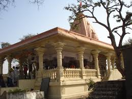

अष्ट भैरवों में प्रमुख श्री कालभैरव का यह मंदिर अत्यंत प्राचीन और चमत्कारिक है।
इस मंदिर की सबसे बड़ी विशेषता यह है कि भैरव प्रतिमा के मुंह में छिद्र न होते हुए भी यह प्रतिमा मदिरापान करती है।
जब पुजारी द्वारा मद्य पात्र भगवान भैरवजी के मुंह से लगाया जाता है, तो सबके देखते ही देखते यह पात्र स्वत: ही खाली हो जाता है।

भैरवगढ़ के दक्षिण में तथा शिप्रा नदी के तट पर श्री कालभैरव का यह चमत्कारिक मंदिर स्थित है। कालभैरव के दक्षिण में करभेश्वर महादेव एवं विक्रांत भैरव के स्थान हैं
। स्कंद पुराण में इसी कालभैरव मंदिर का अवंतिका खंड में वर्णन मिलता है। इनके नाम से ही यह क्षेत्र भैरवगढ़ कहलाता है।
राजा भद्रसेन द्वारा इस मंदिर का निर्माण कराया गया था। उसके भग्न होने पर राजा जयसिंह ने इसका जीर्णोद्धार करवाया।
इस मंदिर के प्रांगण में स्थित एक संकरी और गहरी गुफा में पाताल भैरवी का मंदिर है। यह स्थान तांत्रिक साधना हेतु विशेष महत्वपूर्ण है।